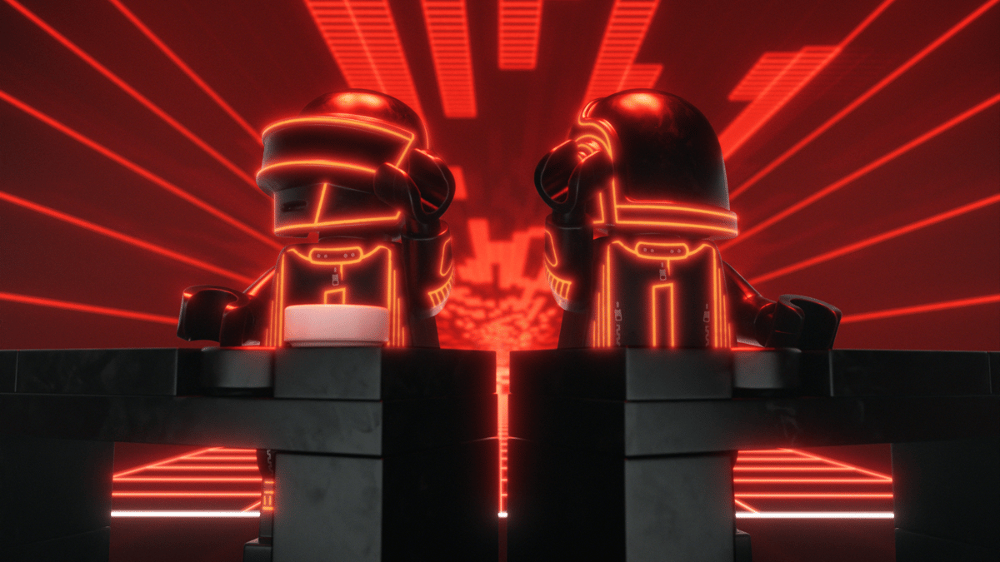

Official announcement / October 22, 2026
Daft Punk × LEGO is official.
LEGO and Daft Punk have announced a partnership, and an official LEGO Ideas set inspired by the Alive 2007 pyramid stage is now in development.
The fan-designed Daft Punk Concert concept has been approved to become an official set. LEGO says more details are coming in 2027; a release date and price have not yet been announced.
READ LEGO’S ANNOUNCEMENT ↗